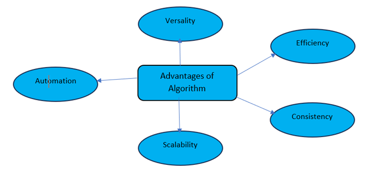
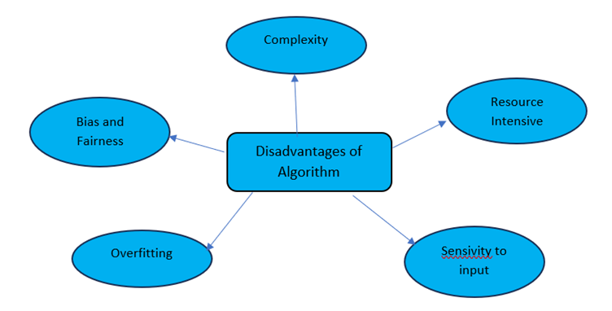

Unambiguity :Each step in an algorithm should be clear and lead to only one meaning.
Finiteness :Mainly employed for building native iOS and macOS applications, providing better performance and safety compared to Objective-C.
Well-defined Inputs :The inputs to an algorithm should be well defined. You should know exactly what inputs the algorithm expects.
Language Independent :An algorithm isn’t written in a specific programming language. It’s a step-by-step procedure which can be implemented in any language.
Effectiveness and Feasibility :An algorithm should be simple, generic and practical, such that it can be executed with the available resources and should provide the desired output efficiently.
Well-defined Outputs :For each set of inputs, the algorithm should produce a well-defined set of outputs.
Advantages of an Algorithm:

Advantages of an Algorithm :
Efficiency :Algorithms provide a systematic approach to problem-solving, optimizing time and resources.
Consistency :They deliver reliable and repeatable results when given the same input.
Scalability :Many algorithms can handle different input sizes, adapting to varying computational needs.
Automation :Algorithms enable machines to perform tasks without constant human intervention, improving efficiency.
Versatility :They can be applied to a wide range of problems in various fields, fostering innovation. generate mind map form above description
Disadvantages of an Algorithm:

Disadvantages of an Algorithm :
Complexity :Some algorithms are complex and can be challenging to understand, implement, and maintain.
Resource Intensive :Certain algorithms may require a lot of time or memory, making them impractical in resource-limited situations.
Sensitivity to Input :Small changes in input data can lead to significantly different outputs, making some algorithms less robust.
Overfitting :Machine learning algorithms, in particular, can overfit to training data, performing poorly on new, unseen data.
Bias and Fairness :Algorithms may inherit biases from training data, resulting in unfair or discriminatory outcomes.